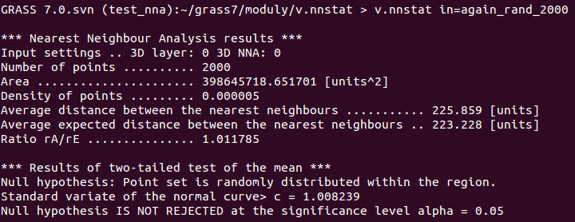
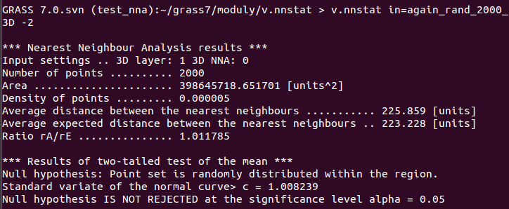
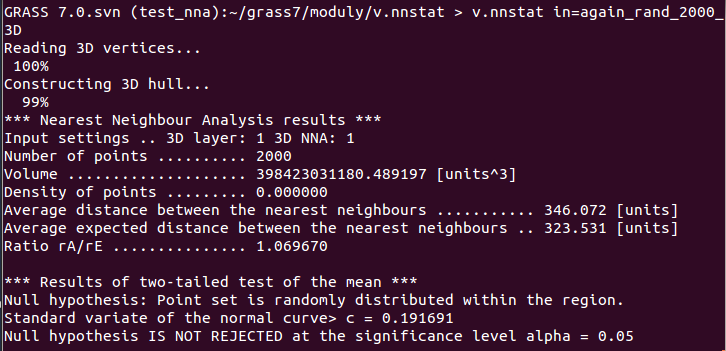
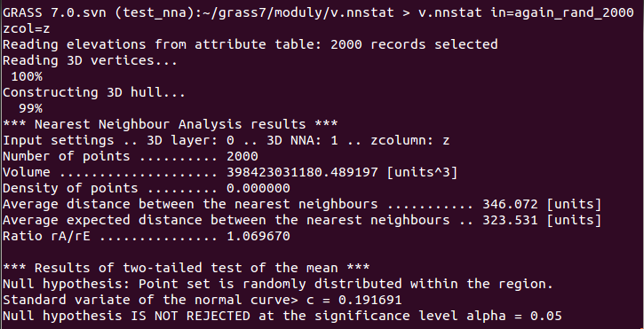

<<<<<<< .mine
DESCRIPTION
v.nnstat indicates clusters, separations or random distribution of point dataset in 2D or 3D space using Nearest Neighbour Analysis (NNA). The method is based on comparison of observed average distance between the nearest neighbours and the distance which would be expected if points in the dataset are distributed randomly. More detailed information about theoretical background is provided in (Clark and Evans, 1954), (Chandrasekhar, 1943, p. 86-87). Details about the module and testing are summarized in (Stopkova, 2013).
EXAMPLES
Comparison of 2D and 3D NNA
On the example of dataset that contains 2000 randomly distributed points, basic settings of analysis dimension (2D or 3D) will be examined:
- 2D NNA may be performed using 2D vector layer. If 2D NNA is required to be performed using 3D vector layer, flag -2 should be marked. In following figures, the results of both cases can be seen.
v.nnstat in=name_of_2D_vector_layer

2D NNA using 2D vector layer
v.nnstat in=name_of_3D_vector_layer -2

2D NNA using 3D vector layer (the 3rd dimension is not considered in the analysis)
NOTE: Comparing the results of 2D NNA with results summarized in (Stopkova, 2013), there can be seen small difference between the values of area. It is assumed to be caused by differences in transformed coordinates of the convex hull that have been computed using two versions of the module. This bug will be fixed soon.
- 3D NNA can be performed just using 3D vector layer. If 3D NNA is required to be performed using 2D vector layer, name of the column in attribute table that contains elevation values must be set. The results are summarized in following tables.
v.nnstat in=name_of_3D_vector_layer

3D NNA using 3D vector layer
v.nnstat in=name_of_2D_vector_layer zcol=name_of_attribute_column_with_elevations

3D NNA using 2D vector layer and elevation values obtained from attribute table of the layer
=======
>>>>>>> .r62696
<<<<<<< .mine
- Warning: If flag -2 is set up together with zcolumn, the flag will have higher priority and 2D NNA will be performed.
=======
v.nnstat indicates clusters, separations or random
distribution of point dataset in 2D or 3D space using Nearest
Neighbour Analysis. The method is based on comparison of observed
average distance between the nearest neighbours and the distance which
would be expected if points in the dataset are distributed
randomly. More detailed information about theoretical background is
provided in
(Clark
and Evans, 1954),
(Chandrasekhar,
1943, p. 86-87). Details about the module and testing are
summarized in
(Stopkova,
2013).
>>>>>>> .r62696
Comparison of various datasets
In (Stopkova, 2013), there might be seen other examples (also clustered and dispersed datasets).
SEE ALSO
v.hull
REQUIREMENTS
AUTHOR
Eva Stopkova
functions for computation of Minimum Bounding Box
volume (Minimum Bounding Rectangle area) are based on functions for
computing convex hull from the module v.hull (Aime, A.,
Neteler, M., Ducke, B., Landa, M.)
<<<<<<< .mine
=======
Last changed: $Date$
>>>>>>> .r62696